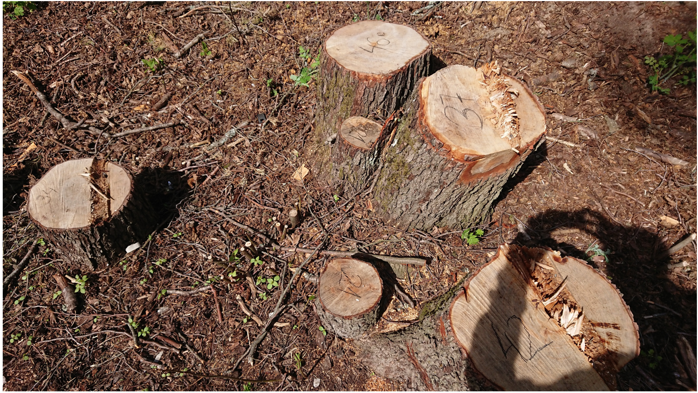

Tallinna Linnavalitsuse poolt Nõmme-Mustamäe maastikukaitsealal (mis sisaldab Natura 2000 kaitseala) tehtud, kuritöö tunnustega raietöödega põhjustatud keskkonnakahjustuste ulatuse täpseks väljaselgitamiseks, tõendite kogumiseks ja fikseerimiseks teostasid "Sütiste metsa kaitseks" aktivistid mahasaetud puude kändude loendamise ja mõõtmise.
Korraldati kaks mõõtmispäeva, millel osales 11 inimest. 22.05.2022 teostati loendamis- ja mõõtmistööd Nõmme-Mustamäe maastikukaitseala Sütiste tee poolses osas, Nature 2000 kaitseala piirides, kaasates osaliselt ka kaitseala Rahumäe metsaosa. 26.05.2022 mõõdeti raied maastikukaitseala ülejäänud osas.
Mõõdeti iga mahavõetud puu läbimõõt. Kännu järgi määrati mahavõetud puu liik (mänd, lepp jne). Kui lehtpuuliiki ei õnnestunud usaldusväärselt määrata, siis protokolliti puu lehtpuuna.
Mõõtmised teostati 2-4-liikmeliste mõõtegruppide poolt. Eelnevalt viidi läbi instruktaaž, kus selgitati üle mõõtmiste ala, puude mahavõtmise tihedamad alad ja käsitleti mõõtmis- ja protokollimismetoodikat. (Foto 2). Igal mõõtegrupil oli väljatrükitud mõõteala kaart, nii skeemina kui ortofotona.
Puuümbermõõtude mõõtmiseks kasutati ehitusala mõõdulinte. Teostati mitu mõõtmist, kännu diameetri erinevate nurkade alt, mõõtudest fikseeriti esimesel mõõtepäeval suurim. Teiselt mõõtmispäeval fikseeriti mõõtude keskmine.
Mõõtmistes taotleti täielikku katvust, s.t mõõtetiimid mõõtsid kõik värskelt (2022. a) mahavõetud kännud. Vanu kände ei mõõdetud ja neid ei ole kaardil kujutatud. Mõõdeti kõik vähemalt 6 cm läbimõõduga kännud.
Mõõtmismetoodika täpsustamiseks konsulteeriti eelnevalt dendroloogidega.
Puu mitu korda arvestamise vältimiseks märgistas iga mõõtegrupp iga mõõdetud kännu, kandes kännule mõõdetud läbimõõdu. (Foto 1). Kändude märgistamiseks kasutati keskkonnasõbralikke, vaha-põhiseid metsanduses kasutatavaid märkekriite. Märked on tagasihoidlikku musta värvi ja kaovad aja jooksul iseenesest.
Korjati iga kännu geokoordinaadid. Selleks oli iga mõõtegrupp varustatud mobiilseadmesse paigaldatud äpiga (GPS Logger). Enne äpi kasutamist viidi läbi instruktaaž. Äppi sisestati ka puu läbimõõt ja liik.
Lisaks registreerisid mõõtegrupid kändude arvu, läbimõõdu ja puu liigi kontrolli eesmärgil täiendavalt paberil. Järelkontrollil võrreldi paberil salvestatud mõõtetulemusi GPS-salvestistega. Leiti mõned erinevused; neid käsitleti konservatiivselt - arvestati väiksemat mõõtu.
Geomõõdistamisel kasutati ka juhendit: Kuidas geomõõdistada?
Mõõtmistööde lõppedes koguneti ja tehti tulemustest kokkuvõte.
Mõõteprotokollid (GPX andmevahetusformaadis failid) edastati kaarditoimetajale, kes tegi järelkontrolli ja töötles andmed kaardirakenduses esitamiseks sobivale kujule.
Edasi töödeldi mõõtetulemusi statistilise analüüsi võimaldamiseks. Selles teisendati andmed CSV kujule ja laeti Google Docs tabelisse. CSV kujule viimisel puhastati andmeid: eemaldati üks tühimõõt ja ühe kände sisaldava kuklasepesa mõõt löödi kaheks.
Geomõõdistati ja kanti kaardile ka puude raiumise alale jäänud või alaga vahetult piirnevad kuklasepesad.
CSV kujul andmed on kättesaadavad: Mõõteandmed.
Mõõteandmed on säilitatud avalikus pilves (GitHub) ja publitseeritud avaandmetena, s.t kõigile kasutamiseks.
22.05.2022 geomõõdistati ja kanti kaardile ka kaitsealal elava kanakulli Linnavalitsuse poolt maharaiutud pesapuu asukoht. See maharaiutud puu on kaardil märgitud eraldi markeriga.
Kommentaariks: Kanakull ei ole maharaiutud pesapuu juurest lahkunud. (Kuid ei saa enam anda järglasi.) Üks mõõtja vaatles mõõtetöölt lahkudes kanakulli u 50 m pesapuust, metsa tihedamas lehtpuude osas varestele jahti pidamas.
Nõmme-Mustamäe maastikukaitsealalt on hävitatud 787 puud.
Maastikukaitseala Natura 2000 kaitsega hõlmatud osast on hävitatud137 puud.
Detailandmed: Mõõteandmed
GPS koordinaatide mobiiliseadmega salvestamisel mõõteviga on hinnanguliselt kuni 1-2 m.
Foto 1. Nõmme-Mustamäe maastikukaitseala, Nature 2000 kaitseala. Mõõdetud, geolokeeritud ja märgitud kännud. 22.05.2022.
Foto 2. Mõõtmise instruktaaž.